1. 開始之前要準備的東西
- 一支 iPhone（這份教學用 iPhone 示範）
- 你的 Apple ID 密碼（下載 App 時可能會用到）
- 手機可以正常上網（Wi-Fi 或行動網路都可以）
- 管理員傳給你的「專屬網址」，看起來像這樣：
https://………/p/一長串英文和數字/
什麼是「管理員」？就是幫大家架好家裡網路的那個人。遇到不會的地方，直接問他就好。
2. 選一種方式
有兩種 App 可以連回家裡，選一種就好，不用兩個都裝。如果不知道選哪個，問管理員，他會告訴你。
🚀 方式 A：Shadowrocket
需要付費購買
- 最簡單，按一個按鈕就設定好
- 不用註冊帳號
- 適合：想用家裡網路上網的人
看方式 A 的教學 →
🔵 方式 B：Tailscale
免費
- 要用 Google 或 Apple 帳號登入
- 管理員要先寄邀請給你
- 適合：需要用到家裡電腦的人
看方式 B 的教學 →
⚠️ 兩個不能同時開iPhone 一次只能開一個 VPN。開了 Shadowrocket，Tailscale 就會自動關掉，反過來也一樣。
3. 打開「我的專屬網頁」
不管選哪一種方式，都會用到這個網頁。它會告訴你：你可以用什麼、能用到什麼時候，也可以在這裡使用雲端硬碟。
1
點開管理員給你的網址
在 LINE 或訊息裡，直接點那個網址，iPhone 會用 Safari 打開。
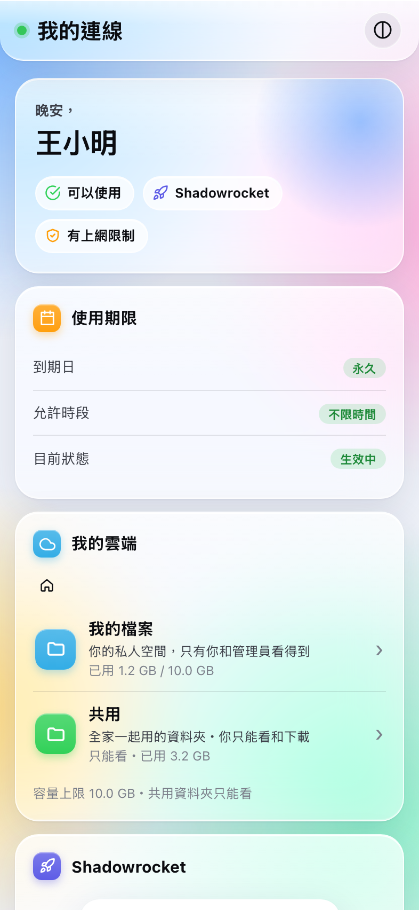
打開後會看到你的名字（圖中「王小明」是範例）
看到綠色的「可以使用」就代表一切正常。如果是紅色，請看最下面的
常見問題。
字太小看不清楚？按右上角的
T 就會變成大字，再按一次變回來。詳細請看
大字模式。
2
把它放到主畫面（以後一點就開）
- 按 Safari 最下面中間的 分享 按鈕（一個方框加向上的箭頭 ⬆︎）
- 往下滑，按 加入主畫面
- 右上角按 加入
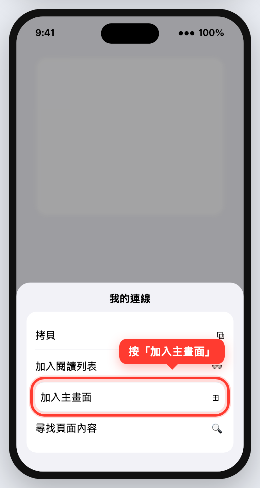
主畫面會多一個「我的連線」圖示
4. 方式 A：Shadowrocket 付費
1
下載 Shadowrocket
- 打開 iPhone 上的 App Store（藍色的 A 字圖示）
- 按右下角 搜尋，輸入 Shadowrocket
- 找到一個藍色火箭圖示的 App，按價錢按鈕購買
- 用 Face ID 或 Apple ID 密碼確認付款
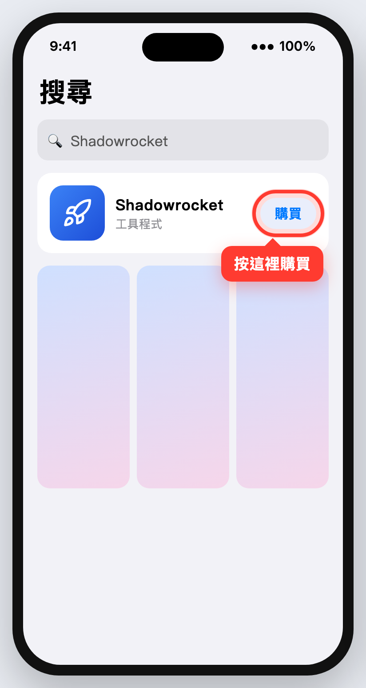
示意圖：實際價格和圖示以 App Store 為準
搜尋不到？中國大陸的 App Store 沒有這個 App。如果找不到，請找管理員幫忙。
2
從「我的專屬網頁」一鍵匯入
- 打開我的專屬網頁，往下滑到 Shadowrocket 那一塊
- 按藍色的 用 Shadowrocket 開啟
- 跳出「要在 Shadowrocket 中打開嗎？」，按 打開
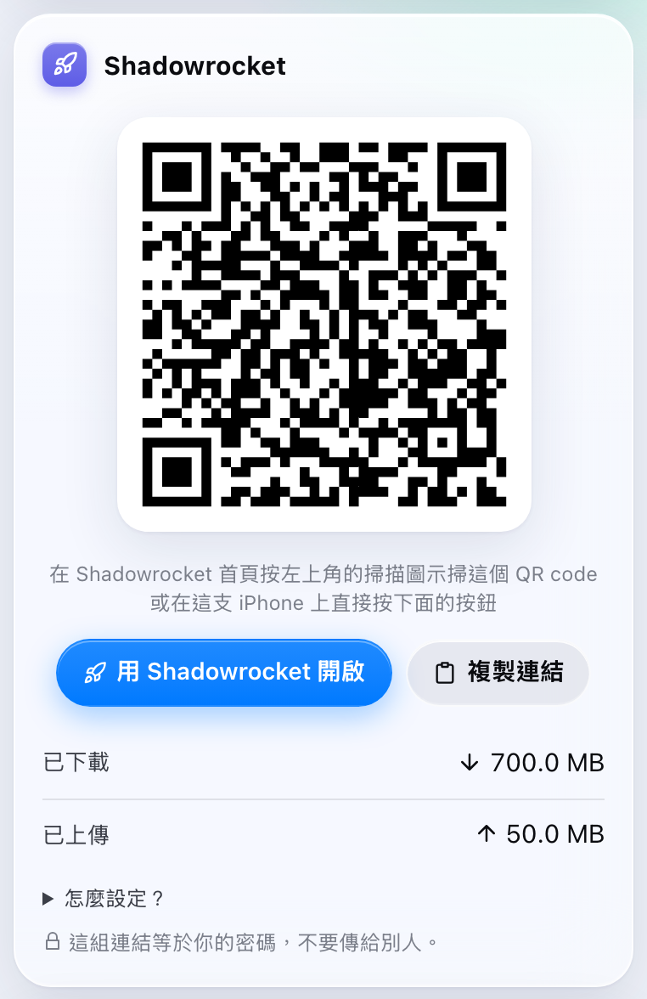
範例・不能掃
你的網頁上會有你自己的 QR code 和按鈕
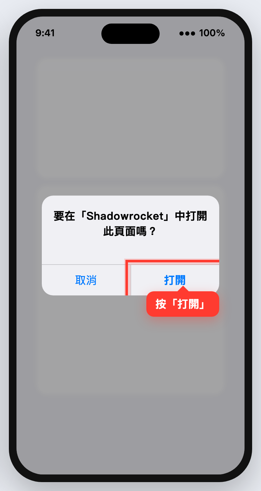
用別台手機掃也可以如果網頁是在電腦上打開的，可以在 Shadowrocket 首頁按左上角的「掃描」圖示，掃網頁上的 QR code。
3
第一次使用：允許 VPN
第一次打開開關時，iPhone 會問你要不要加入 VPN 設定，按 允許，再輸入 iPhone 的開機密碼或用 Face ID。
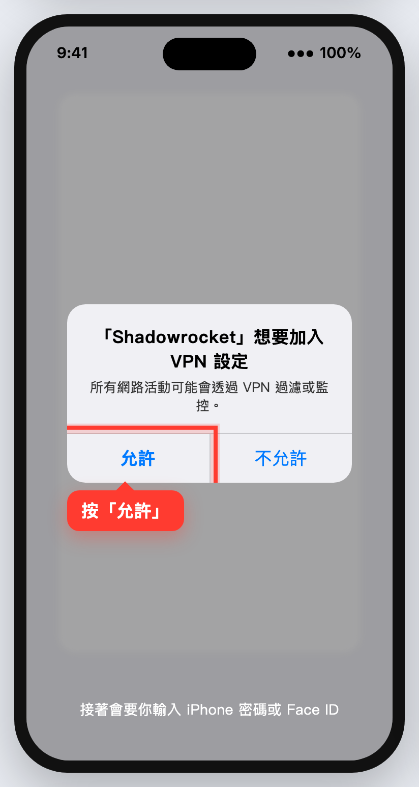
這一步只會出現一次
4
打開開關
- 確認下面的清單裡，「家裡的 Mac」前面有打勾 ✓
- 「全域路由」選 代理
- 打開最上面的開關（變成綠色）
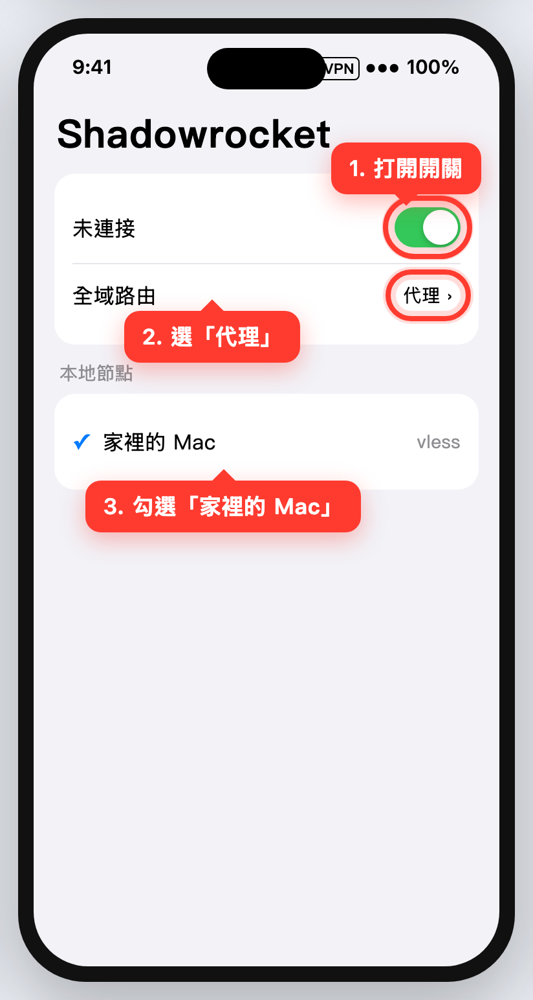
成功的樣子：iPhone 最上面會出現一個小小的 VPN 字樣。
5
檢查有沒有成功
用 Safari 打開 api.ipify.org，畫面上會出現一串數字。這串數字和管理員告訴你的一樣，就代表成功了！
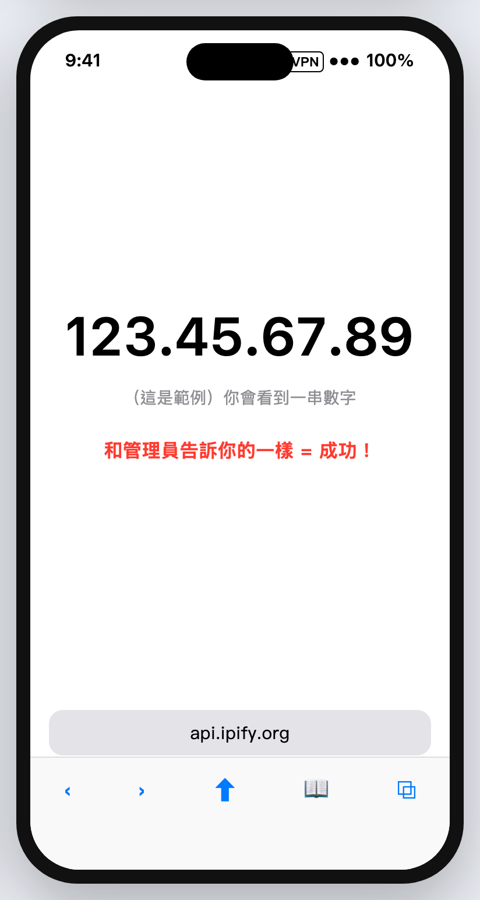
圖中的數字是範例
6
平常怎麼用？
- 要用的時候：打開 Shadowrocket，把開關打開
- 不用的時候：把開關關掉就好（比較省電）
- 也可以到 iPhone 的 設定 → VPN 開關
5. 方式 B：Tailscale 免費
先確認：管理員已經邀請你了嗎？管理員會用 Email 或 LINE 傳一個「邀請連結」給你。沒有邀請的話，登入後什麼都連不到。
1
下載 Tailscale
- 打開 App Store，搜尋 Tailscale
- 按 取得（免費），再用 Face ID 或密碼確認
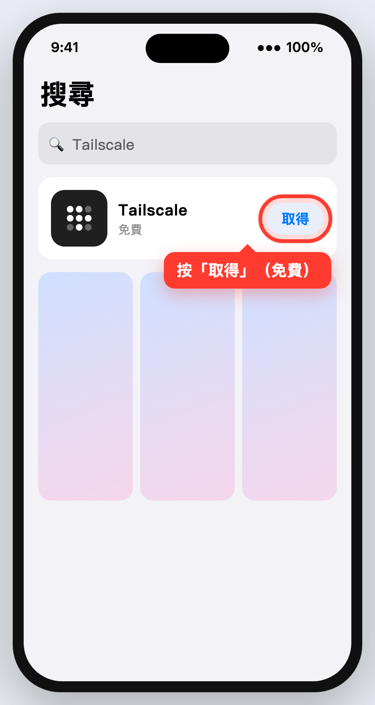
示意圖：實際圖示以 App Store 為準
2
接受邀請並登入
- 點管理員傳給你的邀請連結，按「接受」
- 打開 Tailscale App，按 登入
- 選你平常用的帳號（Google 或 Apple）登入
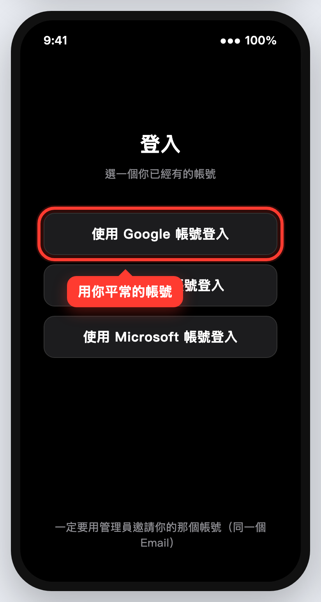
示意圖：實際畫面可能是英文
一定要用同一個帳號要用管理員邀請的那個 Email 登入，不然會連不到。
3
允許 VPN
和 Shadowrocket 一樣，第一次會問你要不要加入 VPN 設定（名稱會是 Tailscale），按 允許，再輸入 iPhone 密碼或 Face ID。
4
打開連線，選「家裡的電腦」
- 把最上面的開關打開（變成綠色）
- 點 Exit Node
- 選 家裡的電腦（實際名字請問管理員）
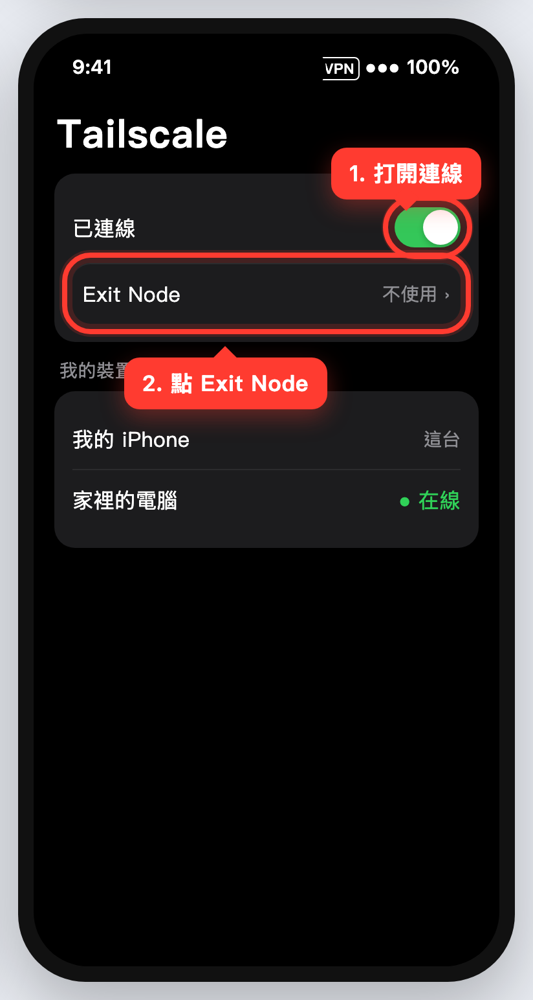
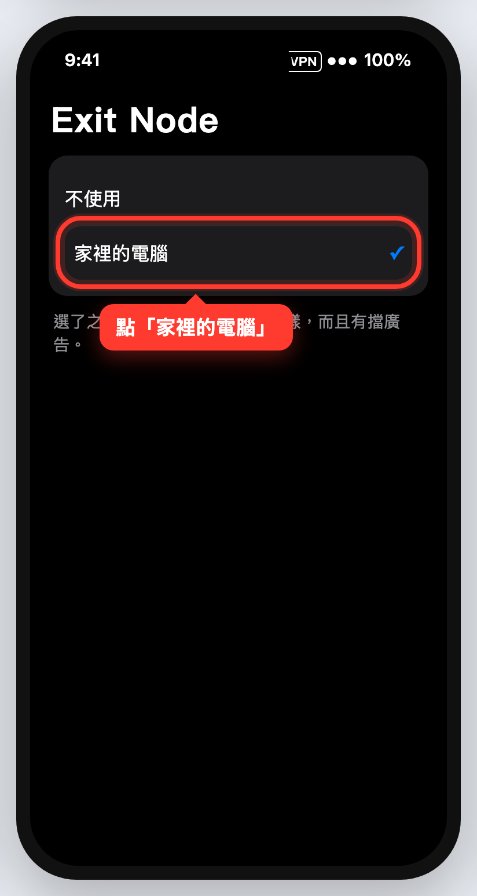
選了之後，你上網就像在家裡一樣，還會自動擋廣告
沒有看到 Exit Node？代表管理員沒有開放這個功能給你，這是正常的。
6. 使用「我的雲端」存照片和檔案
如果管理員幫你開了雲端硬碟，我的專屬網頁上會有 「我的雲端」。你可以把照片、影片、文件存在家裡的硬碟，換手機也不怕不見。
1
認識兩個資料夾
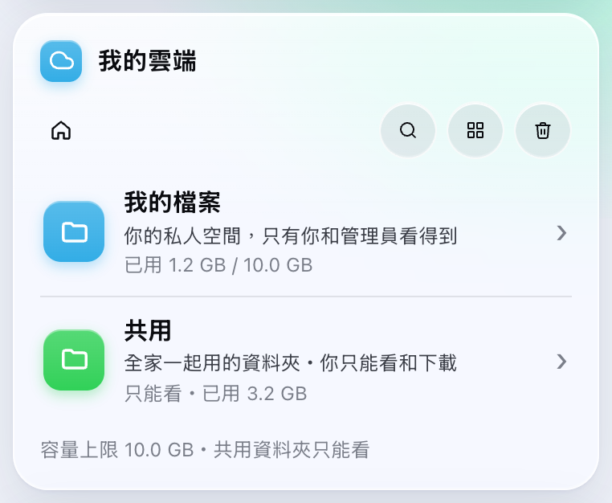
- 我的檔案：你自己的空間，只有你和管理員看得到。下面會寫你已經用了多少、最多能放多少。
- 共用：全家一起用的資料夾。你能不能放東西進去，由管理員決定。
2
上傳照片或影片
- 點 我的檔案 進去
- 按藍色的 上傳
- 選 照片圖庫，勾選要上傳的照片或影片，按 加入
- 等進度條跑完，就會出現「已上傳」。進度條下面會寫速度和還要多久
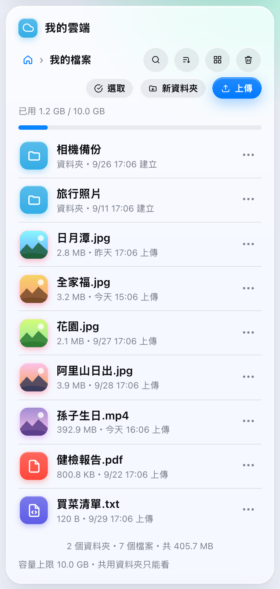
每個檔案下面會寫大小和什麼時候上傳的，最下面有總共幾個檔案、佔多少空間
上傳時不要關掉網頁影片比較大，要等久一點。上傳到一半離開網頁，就要重新上傳。想要每天自動備份，請看
第 7 步。
3
上面那排小按鈕是做什麼的
- 🔍 搜尋：輸入檔名的一部分，例如「生日」，就會找出所有資料夾裡有「生日」的檔案
- ↕️ 排序：可以照 名稱、上傳時間、修改時間、大小、類型 排。想看最新上傳的，就選「上傳時間」
- ▦ 切換顯示方式：在「清單」和「相簿」之間切換。相簿模式會把照片排成格子，像手機的照片 App
- 🗑 垃圾桶：刪掉的東西會先放在這裡（看第 6 個步驟）
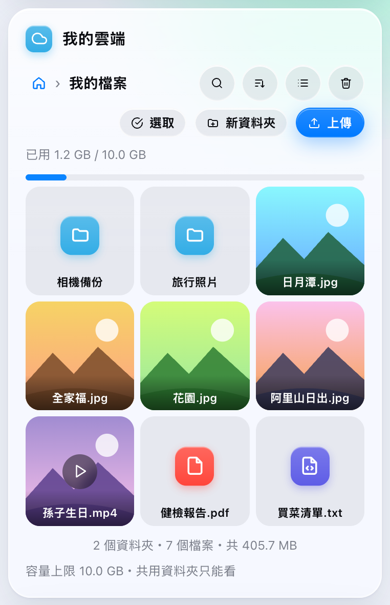
相簿模式：照片、影片、PDF 都看得到縮圖
4
點一下就能直接看
不用下載，點一下就能在手機上打開：
- 照片、影片、音樂：直接看、直接播。往左、往右滑可以看上一張、下一張
- PDF、Word、Excel、PowerPoint、Pages、Keynote：會顯示第一頁的樣子。PDF 按 打開 PDF 可以看全部；Word 檔可以按 看文字 看全文
- 文字檔（.txt）、表格（.csv）：直接顯示內容，CSV 會排成表格
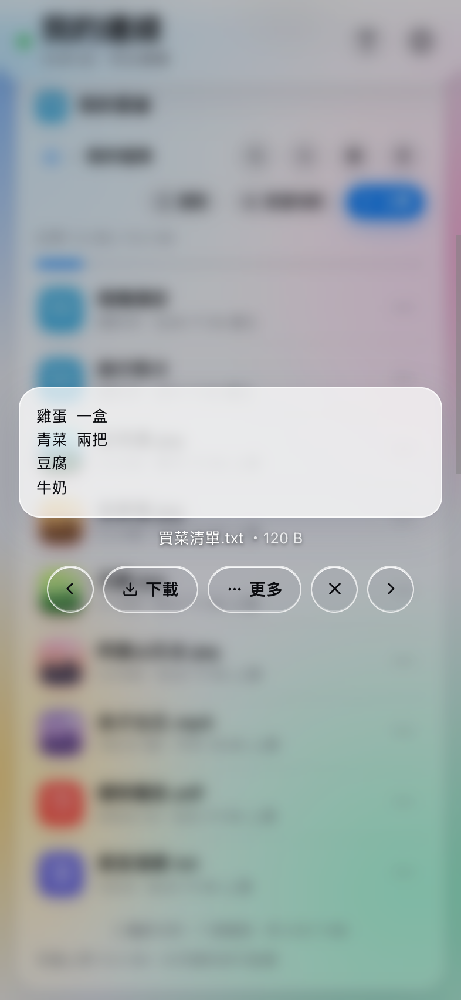
文字檔直接顯示內容
5
按 ⋯ 可以做更多事
每個檔案右邊都有 ⋯，按下去會看到：
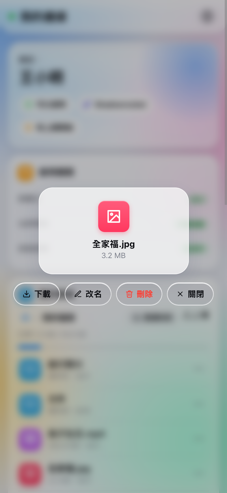
- 下載：存到手機裡。如果是資料夾，會變成 下載 ZIP，整個資料夾一次下載
- 詳細資訊：看檔案多大、什麼時候上傳、照片幾萬畫素、影片多長
- 分享：產生一個連結傳給朋友（看下面「分享給別人」）
- 改名、移動（搬到別的資料夾）、刪除
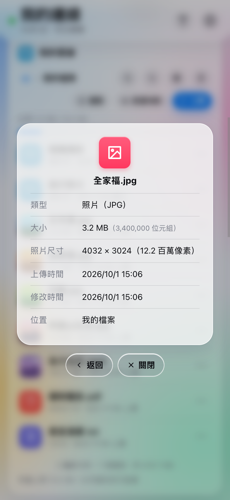
詳細資訊
6
一次整理很多個檔案
- 按 選取
- 點要整理的檔案，前面會出現藍色的勾勾 ✓（按 全選 可以一次全部勾）
- 按 移動 搬到別的資料夾，或按 刪除
- 做完按 完成
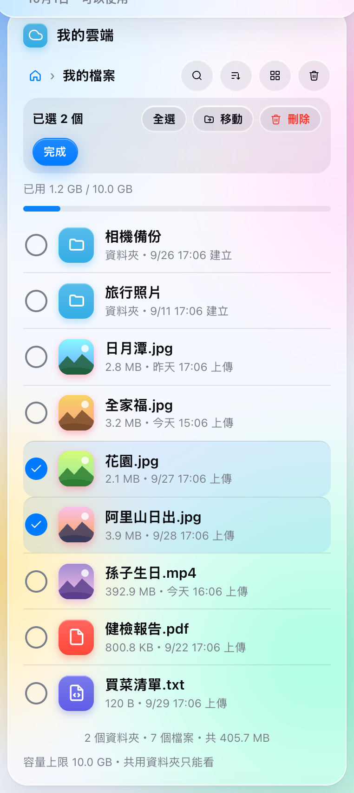
移動時會跳出資料夾清單：點資料夾進去，到了想放的地方，按 移到這裡。
7
不小心刪掉了？到垃圾桶救回來
刪掉的檔案不會馬上消失，會在垃圾桶放 30 天，之後才自動清掉。
- 按上面那排的 🗑 垃圾桶
- 找到要救的檔案，按 還原，它就會回到原本的資料夾
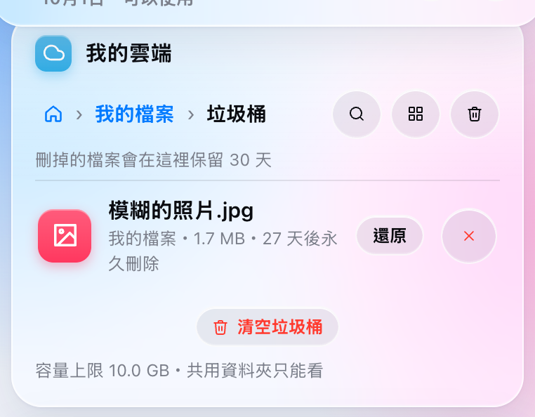
垃圾桶裡按 ✕ 或「清空垃圾桶」就真的救不回來了按下去還要再按一次確認，請看清楚再按。
8
分享給別人（對方不用裝 App）
- 在檔案或資料夾按 ⋯ → 分享
- 選 有效期限（1 天、7 天、30 天、永久）
- 可以限制 最多下載幾次，也可以設 密碼
- 按 建立連結，連結會自動複製好，貼到 LINE 傳給對方就可以了
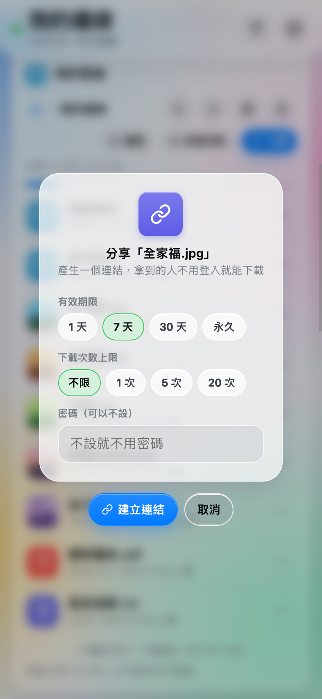
對方打開會看到什麼？一個只能看和下載的網頁，看不到你其他的檔案。分享資料夾的話，對方可以按「全部下載（ZIP）」。時間到、次數用完，或管理員取消，連結就會失效。
有設密碼的話，密碼要另外告訴對方不要把密碼和連結貼在同一則訊息裡。
7. iPhone 照片每天自動備份
用 iPhone 內建的「捷徑」App，每天晚上自動把當天拍的照片存到你雲端的「相機備份」資料夾。不用另外下載 App，也不用開 VPN，只要有網路就會備份。
1
先複製你的上傳網址
在我的專屬網頁找到 「iPhone 照片自動備份」，按 複製上傳網址。
網頁上找不到這一塊？代表管理員沒有開放你使用自動備份（在網頁上手動上傳照片還是可以）。需要的話可以
留言請管理員打開。
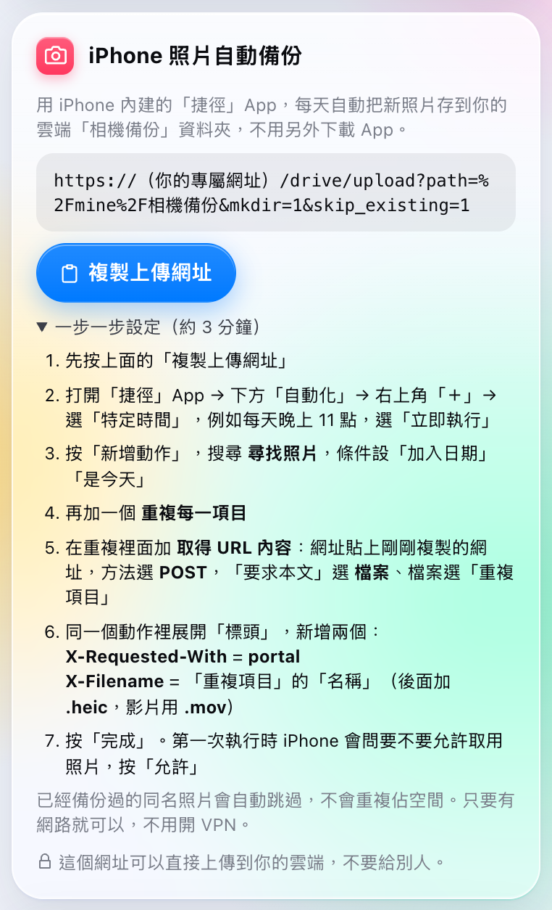
網頁上也有同樣的步驟可以照著做
2
在「捷徑」App 新增自動化
- 打開 捷徑 App（找不到的話，在主畫面往下滑搜尋「捷徑」）
- 按下面的 自動化，再按右上角 ＋
- 選 特定時間，設成每天晚上 11:00，選 立即執行，按 下一步
3
加入三個動作
- 按 新增動作，搜尋 尋找照片，加入。按「加入過濾條件」，設成 加入日期・是今天
- 再搜尋 重複每一項目，加入
- 在「重複」裡面，加入 取得 URL 內容：
- 網址：貼上剛剛複製的網址
- 按「顯示更多」，方法選 POST
- 要求本文選 檔案，檔案選 重複項目
- 標頭按「新增標頭」兩次：
第一個：名稱 X-Requested-With，值 portal
第二個：名稱 X-Filename，值選 重複項目 的 名稱，後面打上 .heic
（如果「設定 → 相機 → 格式」選的是「最相容」，就改打 .jpg）
4
試跑一次
按右下角的 ▶︎ 試跑。第一次 iPhone 會問「允許取用照片嗎？」，按 允許。跑完到「我的雲端 → 我的檔案 → 相機備份」看看，今天的照片應該都在了。
重複跑也沒關係已經備份過的同一張照片會自動跳過，不會佔兩份空間。
容量滿了就會停「我的檔案」滿了以後就存不進去。可以在雲端刪掉舊照片，或用
留言請管理員加大容量。
8. 其他好用的功能
1
大字模式（給長輩用）
按專屬網頁右上角的 T，整個網頁的字和按鈕都會變大。這支手機會記住，下次打開還是大字。再按一次 T 就變回原本的大小。
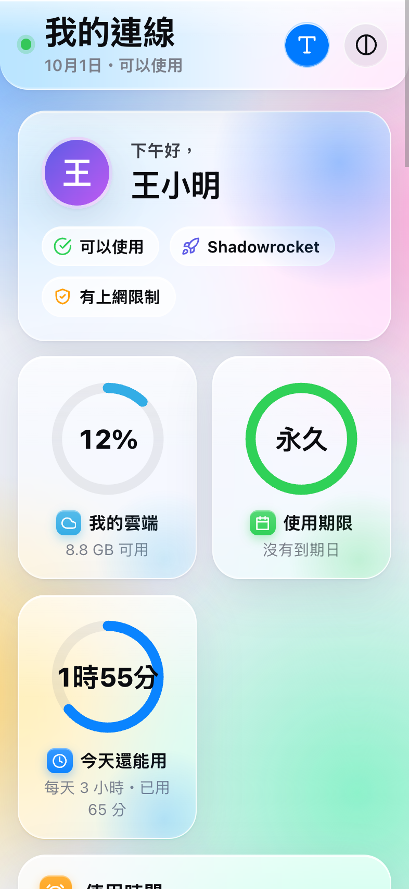
開啟後 T 會變成藍色
2
今天還能用多久
如果管理員幫你設了每天可以用多久，網頁上會多一個藍色圓圈「今天還能用」，寫著還剩幾分鐘。
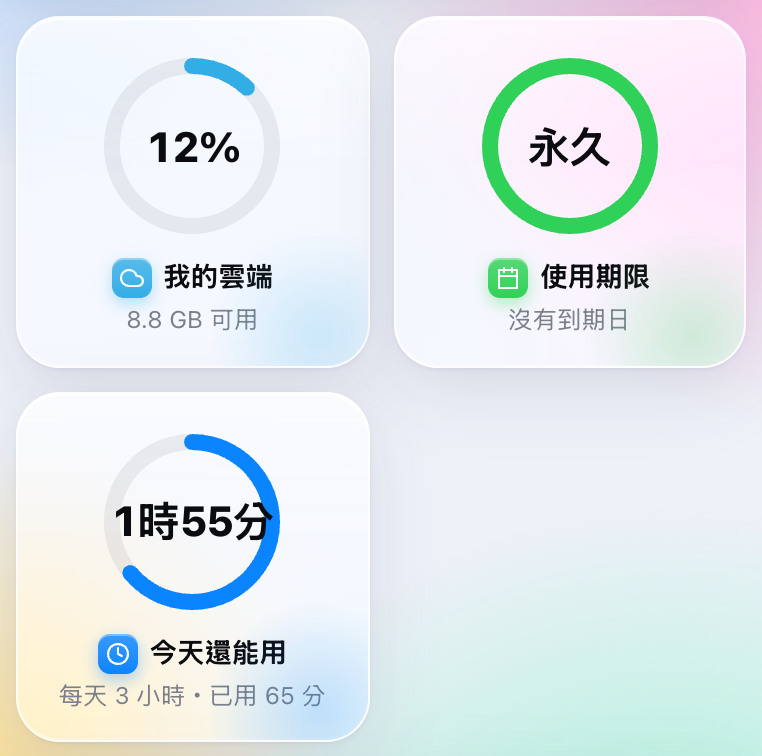
- 只有真的在用網路的時候才算時間，開著不用不會扣
- 時間用完，當天就連不上，半夜 12 點自動恢復
- 不夠用的話，可以留言請管理員加
3
留言給管理員
想延長使用期限、加大雲端容量、增加每天的時數，或是遇到問題，都可以直接在網頁上留言：
- 在「留言給管理員」選一個項目，例如 加大雲端容量
- 想補充的話寫在下面的框框（可以不寫）
- 按 送出
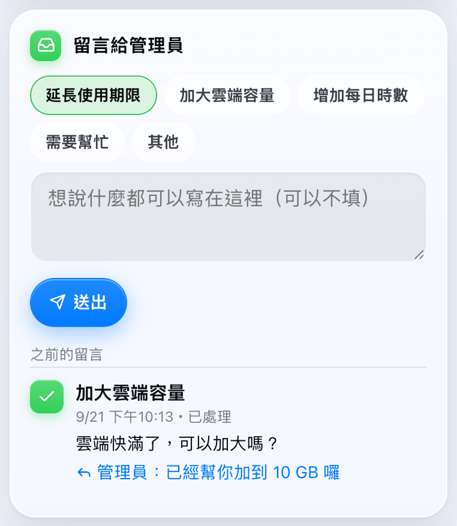
管理員的手機會馬上收到通知。他回覆以後，會顯示在「之前的留言」下面，綠色勾勾代表已經處理好了。
4
網速測試
覺得很慢的時候，到網頁最下面的「連線檢查」，按 網速測試 旁邊的 開始，大約 10 秒就會顯示下載和上傳的速度。
- 20 Mbps 以上：很快，看影片沒問題
- 5～20 Mbps：一般使用沒問題
- 5 Mbps 以下：比較慢，可以換個地方或換 Wi-Fi 試試
每測一次大約用掉 15 MB 的網路流量，用行動網路的話不要一直測。
9. 看家裡 Mac 的狀況 有控制台權限的人
家裡的網路、雲端都是靠一台 Mac 在跑。如果管理員有開「控制台」給你，就可以看到這台 Mac 現在忙不忙、熱不熱、電池好不好。這一頁只能看，不會改到任何設定，放心點。
1
打開「Mac」頁面
- 打開控制台（要先開 Tailscale）
- 按下面的 設定，再按上面的 Mac
或是在控制台首頁，直接點 CPU 或 記憶體 那兩個圓圈，也會跳到這一頁。
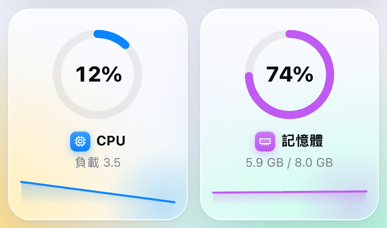
首頁點這兩個圓圈就能看詳細
2
最上面：一眼看懂現在的狀況
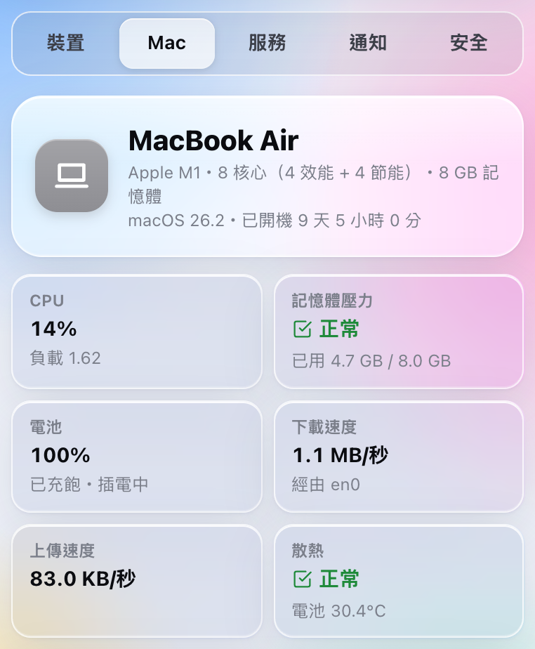
- CPU：電腦現在有多忙。平常 20% 以下，偶爾衝高沒關係
- 記憶體壓力：綠色「正常」就好；橘色「偏高」代表程式開太多，電腦會變慢
- 下載／上傳速度：家裡這台 Mac 現在正在傳多少資料
- 散熱：綠色「正常」；如果出現紅色「過熱降速」，代表太熱了，電腦會自己放慢
這一頁每 5 秒會自己更新，不用一直按重新整理。
3
趨勢圖：看過去 24 小時
可以選看最近 1 小時、6 小時 或 24 小時。用手指點一下圖，就會顯示那個時間的數字；點圖以外的地方就收起來。
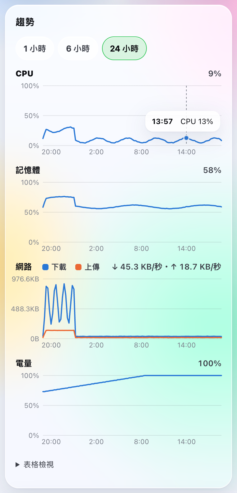
點圖上任何一點，就會看到那個時間的數值
不習慣看圖的話，按最下面的 表格檢視，會用表格列出每個時間的數字。
4
電池
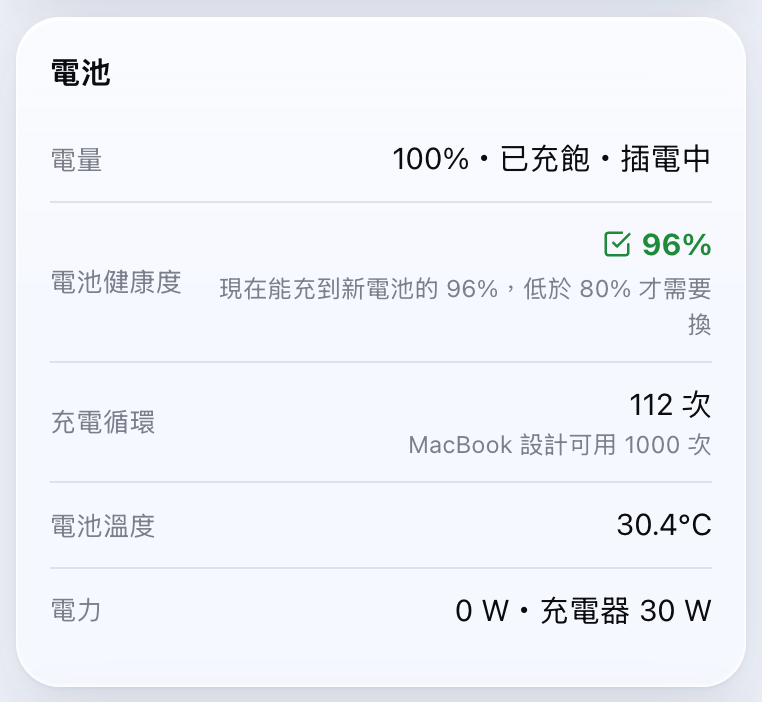
- 電池健康度：電池現在能充到新電池的幾 %。80% 以上都很正常，低於 80% 才需要考慮換電池
- 充電循環：電池用了幾輪。MacBook 設計可以用 1000 次
- 電池溫度：30 幾度很正常；超過 40 度會變橘色提醒
5
記憶體：為什麼電腦變慢
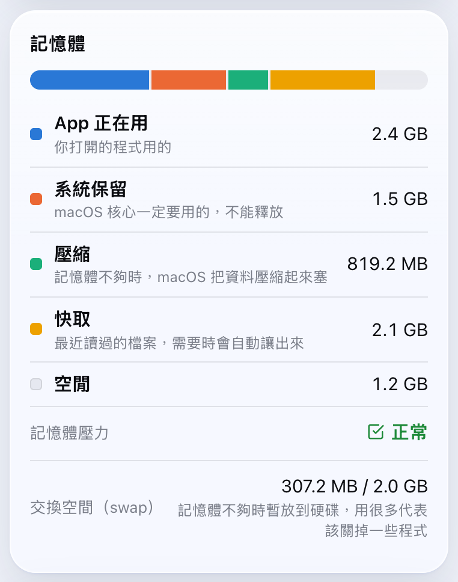
- 長條分成幾種顏色，每一種旁邊都有說明和用量
- 快取不用擔心，需要時會自動讓出來
- 壓縮和交換空間（swap）很多，代表記憶體不夠，電腦會變慢、變熱
6
最耗資源的程式
可以切換 依 CPU 或 依記憶體 排序。同一個程式開了很多個（例如瀏覽器的每個分頁），會合併成一行，後面標 ×數量。
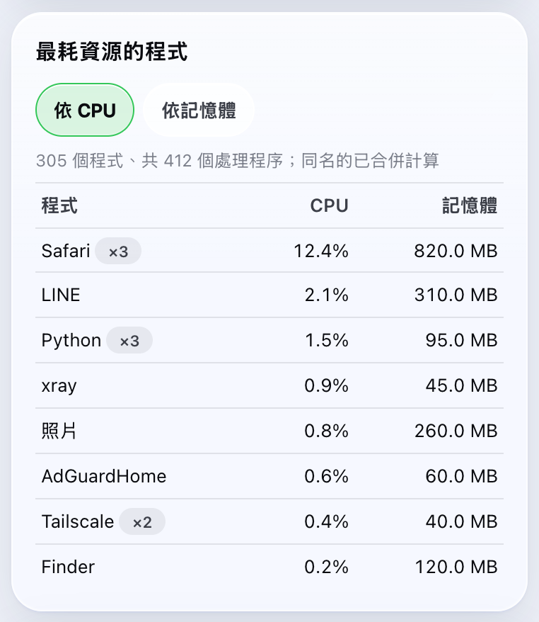
覺得家裡網路或雲端變慢？先看這一頁：如果「記憶體壓力」是橘色，或某個程式佔很多，告訴管理員，請他關掉一些程式或重開機一次。
10. 用手機遙控 Windows 電腦 管理員
家裡有 Windows 電腦的話，可以像遙控 Mac 一樣，用手機控制它：看它在不在用、切歌、調音量、跳通知給正在用電腦的人、鎖定、關機。只有管理員（控制台擁有者）看得到這個功能。
1
Windows 先裝好 Tailscale
- 在 Windows 上到 tailscale.com/download 下載安裝
- 登入跟你手機一樣的帳號（很重要，不同帳號會連不上）
- 右下角的 Tailscale 圖示要是已連線
2
在手機產生安裝指令
- 打開控制台，按下面的 遙控
- 按最上面的 ＋ Windows，再按 產生安裝指令
- 按 複製指令，用 LINE 或 email 傳到 Windows 電腦上
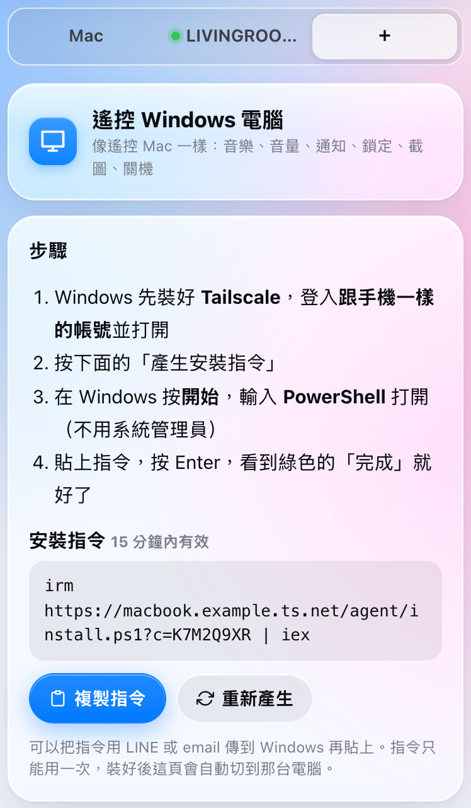
指令只能用一次，15 分鐘內有效；過期就按「重新產生」
3
在 Windows 貼上指令
- 按鍵盤的 ⊞ Windows 鍵（或左下角的開始），輸入 PowerShell，按 Enter 打開
- 在藍色或黑色的視窗裡按右鍵（或 Ctrl+V）貼上指令，按 Enter
- 看到綠色的 「完成！」 就好了，可以把視窗關掉
不用系統管理員權限，也不用改防火牆。之後每次開機登入都會自動在背景執行，不會跳出任何視窗。
裝好之後，手機上的頁面會自動切到這台電腦。電腦名稱太長的話，可以在最下面的「管理」改成好認的名字，例如「客廳電腦」。
4
看狀態、控制音樂
上面的按鈕可以在 Mac 和每一台 Windows 之間切換。名字旁邊是綠點代表電腦開著、連得到。
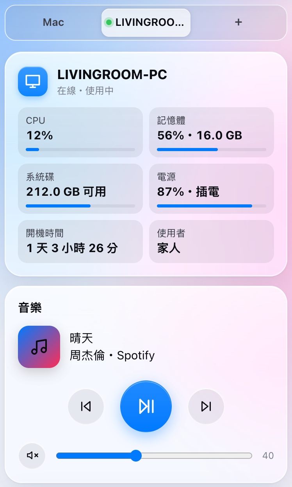
- 在線・使用中／閒置／已鎖定：可以知道現在有沒有人在用這台電腦
- 音樂：Spotify、瀏覽器裡的 YouTube 等都看得到正在播什麼，可以暫停、切歌、拉音量
5
螢幕和電源
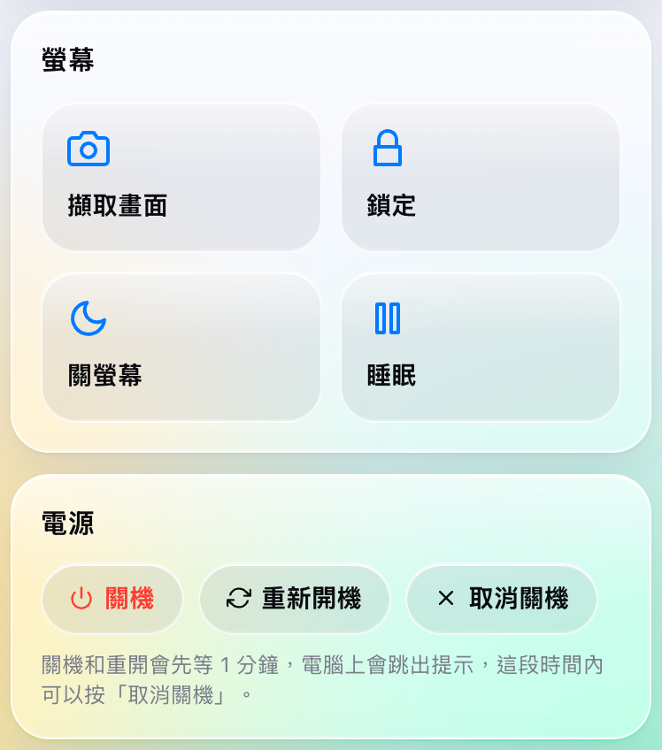
- 擷取畫面：看電腦現在的畫面（電腦鎖定時看不到）
- 睡眠、關機、重新開機要連按兩下才會執行，避免不小心按到
- 關機和重開會先等 1 分鐘，電腦上會跳出提示；後悔了就按 取消關機
再往下還有：跳出通知和念出來（例如「吃飯了！」）、剪貼簿同步（手機和電腦互傳文字）、在電腦上開網址。
6
不想用了：移除
在那台電腦的頁面最下面按 移除這台電腦（要按兩下）。電腦開著的話，上面的程式會自己刪掉；電腦關著的話，下次開機連線時會自動刪掉。
安全說明只有你的控制台能遙控，而且只透過 Tailscale；電腦上的程式只會做這一頁列出的事，不能執行其他程式。每次有新電腦加入，你的手機都會收到通知，不是你加的就馬上移除。
11. 回報問題給管理員
網頁打不開、雲端上傳失敗、連不上網…遇到怪怪的地方，直接在你的專屬網頁告訴管理員。不用打字解釋很多，選一選、拍張截圖就可以。
1
找到「回報問題」
打開你的專屬網頁，往下滑，找到橘色的 「回報問題」，按 我要回報問題。
下面的「我的回報」會顯示處理進度和管理員的回覆
2
填一下就好
- 哪裡有問題？：選雲端硬碟、上網／連線、專屬網頁…
- 有多嚴重？：小問題、有點影響，還是完全不能用
- 用一句話說發生什麼事：例如「上傳影片到一半就失敗」
- 詳細說明：可以不寫；有寫會更快找到原因
- 截圖：按 選擇截圖，從相簿選，最多 3 張
- 按 送出回報，管理員的手機會馬上收到通知
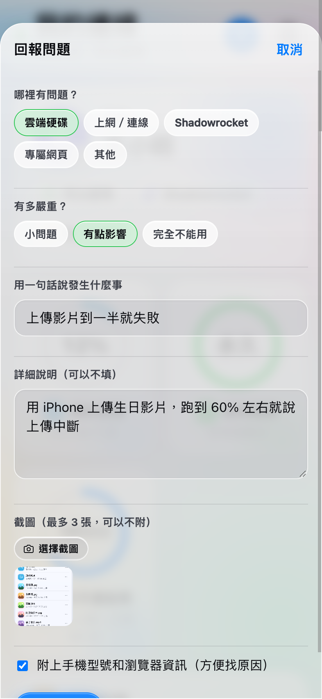
怎麼截圖？iPhone 同時按「側邊按鈕」和「調高音量」，畫面閃一下就截好了，會存在「照片」裡。
「附上手機型號和瀏覽器資訊」建議保持勾選，管理員比較容易找到原因。不會傳你的照片、通訊錄或位置。
3
看管理員的回覆
- 管理員回覆時，標題旁邊會出現紅點 🔴
- 右邊的標籤會顯示進度：新回報 → 處理中 → 已修好
- 想補充說明，在下面的框框打字再按 送出
- 標成「已修好」但還是有問題？點「還是有問題？」告訴管理員，回報會重新回到他的待處理清單
很急嗎？例如完全連不上網、雲端打不開，選「完全不能用」，管理員會收到緊急通知。真的很急也可以直接打電話給他。
12. 遇到問題怎麼辦
遙控 Windows：貼上指令後出現紅字「安裝失敗」
- 確認 Windows 右下角的 Tailscale 是已連線，而且登入的是跟手機一樣的帳號。
- 指令只能用一次、15 分鐘內有效：回手機按 重新產生，用新的指令再貼一次。
- 要在 PowerShell 裡貼，不是「命令提示字元（cmd）」。
遙控 Windows：電腦一直顯示「離線」，按鈕都是灰的
電腦可能關機、睡眠，或沒開 Tailscale。把電腦叫醒、確認 Tailscale 已連線，大約 30 秒內就會變回綠點。還是不行，可以在電腦上登出再登入一次（遙控程式會在登入時自動啟動）。
開了之後上不了網
- 先把 Shadowrocket（或 Tailscale）的開關關掉再打開。
- 還是不行，就先把開關關掉，手機就會恢復正常上網。
- 用回報問題告訴管理員（選「完全不能用」）：可能家裡的電腦關機了或網路斷了。
專屬網頁上寫「權限目前無效」或紅色字
- 不在允許時段：管理員設定了可以使用的時間，時間到了就能用。
- 已過期：使用期限到了，請問管理員要不要延長。
- 已停用：管理員暫時關掉了，請問管理員。
寫「今日時數已用完」
你今天可以用的時間用完了，
半夜 12 點會自動恢復。急著要用的話，可以
留言請管理員幫你加時數。
專屬網頁打開寫「找不到頁面」或「網址已失效」
管理員可能幫你換了新的網址（例如為了安全）。請管理員傳新的網址給你，舊的就不要再用了。
Shadowrocket 裡「家裡的 Mac」旁邊有紅點
有些 App 或網站打不開
管理員可能幫你設了「上網限制」（例如擋廣告、擋某些 App）。在專屬網頁的 上網限制 那一塊可以看到被擋的項目。有需要請問管理員。
上傳失敗，寫「超過你的容量上限」
你的「我的檔案」已經滿了。可以刪掉一些不要的檔案，或請管理員幫你加大容量。
照片自動備份沒有跑
- 捷徑顯示「管理員沒有開放你使用照片自動備份」：請管理員在控制台幫你打開。
- 打開「捷徑」App →「自動化」，確認那個自動化有打開，而且選的是「立即執行」。
- 手動按一次 ▶︎ 試跑，看有沒有出現錯誤訊息。
- 寫「forbidden」：檢查兩個「標頭」的名稱有沒有打錯（大小寫也要一樣）。
- 寫「超過你的容量上限」：雲端滿了，請刪掉舊檔案或請管理員加大容量。
朋友說分享連結打不開
連結可能已經過期、下載次數用完，或是被取消了。重新分享一次，產生新的連結傳給他就好。
照片在雲端裡看起來是灰色的、沒有縮圖
第一次打開時，家裡的電腦要花幾秒做縮圖，等一下再重新整理就會出現。點開照片一樣可以看。
控制台裡找不到「Mac」那一頁
「Mac」頁面只有管理員有開「控制台」權限的人才看得到。需要的話請問管理員。
換了新手機怎麼辦？
在新手機上重新做一次：下載 App → 打開專屬網址 → 按「用 Shadowrocket 開啟」（或用 Tailscale 登入）。雲端裡的檔案都還在，不會不見。
可以同時開 Shadowrocket 和 Tailscale 嗎？
不行，iPhone 一次只能開一個。要用哪個就開哪個。
13. 安全小提醒
🔒 你的專屬網址和 QR code 就像鑰匙拿到的人就能用你的身分連進家裡、看你的雲端。
- 不要把專屬網址傳給別人，也不要貼到群組
- 不要把 Shadowrocket 的 QR code 截圖分享
- 如果不小心傳出去了，馬上告訴管理員，他可以幫你換新的，舊的會立刻失效
- 不要把「照片自動備份」的上傳網址給別人，拿到的人可以把檔案傳到你的雲端
- 分享連結傳出去以後，拿到連結的人都能下載。重要的檔案記得設密碼、設期限
- 有人自稱是管理員跟你要密碼或驗證碼，先打電話跟本人確認